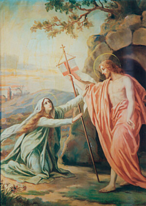
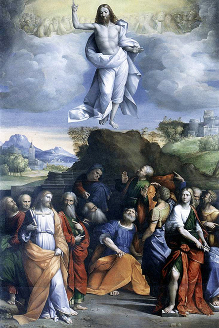
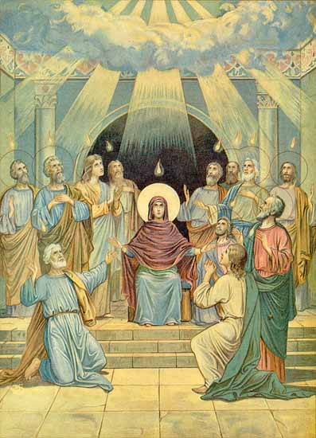
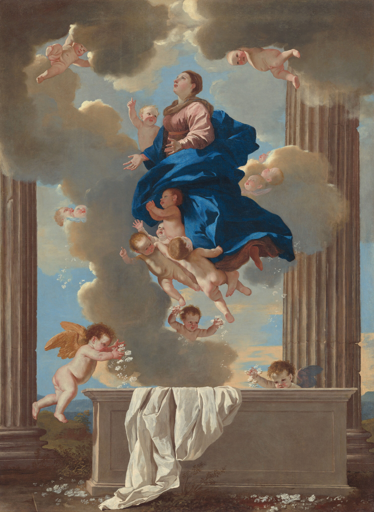

The Ressurection

The Ascension

The Holy Spirit

The Assumption


I believe in God, the Father almighty creator of heaven and earth and in Jesus Christ, His only Son, our Lord, who was conceived by the Holy Spirit, born of the Virgin Mary, suffered under Pontius Pilate, was crucified, died, and was buried. He descended into hell. On the third day he rose again from the dead. He ascended into heaven and is seated at the right hand of God, the Father almighty. He will come again in glory to judge the living and the dead. I believe in the Holy Spirit, the Holy Catholic Church, the communion of saints, the forgiveness of sins, the resurrection of the body, and life everlasting. Amen.
Our Father, who art in heaven hallowed be thy name; thy kingdom come; thy will be done on earth as it is in heaven. Give us this day our daily bread and forgive us our trespasses as we forgive those who trespass against us; and lead us not into temptation, but deliver us from evil. Amen.
Hail Mary, full of grace. The Lord is with thee. Blessed art thou among women, And blessed is the fruit of thy womb, Jesus. Holy Mary, Mother of God, Pray for us sinners, Now and at the hour of our death. Amen
Glory be to the Father, and to the Son, and to the Holy Spirit. As it was in the beginning, is now, and ever shall be, world without end. Amen.
Hail Holy Queen, Mother of Mercy, our Life, our Sweetness, and our hope. To thee we cry, poor banished children of Eve. To thee we send up our sighs, mourning and weeping in this vale of tears. Turn then most gracious advocate, Thine eyes of mercy toward us, and after this, our exile, show unto us, the blessed fruit of thy womb, Jesus. O clement, O loving, O sweet Virgin Mary. Pray for us O Holy Mother of God, That we may be made worthy of the promises of Christ. Amen.
Let us pray. O God, whose only begotten Son, by His life, death, and resurrection, has purchased for us the rewards of eternal life, grant, we beseech Thee, that meditating upon these mysteries of the Most Holy Rosary of the Blessed Virgin Mary, we may imitate what they contain and obtain what they promise, through the same Christ Our Lord. Amen.
St. Michael the Archangel, defend us in battle, be our protection against the wickedness and snares of the devil. May God rebuke him we humbly pray; and do thou, O Prince of the Heavenly host, by the power of God, cast into hell Satan and all the evil spirits who prowl about the world seeking the ruin of souls. Amen.